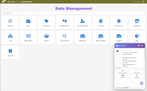

The New React + TypeScript UI Architecture of IACF
The IACF UI has undergone a complete modernization, resulting in a robust, modular, and extensible front-end framework engineered for enterprise manufacturing applications. This updated architecture combines React, TypeScript, modular component design, and dynamic runtime configuration to enable high-performing and rapidly deployable manufacturing interfaces.
Modern UI Foundations for Enterprise Scale
React + TypeScript Core
The framework leverages:
-
React functional components
-
TypeScript strict typing
-
Hooks-based lifecycle management
-
Redux or Zustand (depending on module) state management
-
Dynamic schema-driven rendering
-
SignalR real-time connectivity
This architecture ensures predictable data flow, safer code, and maintainability across large teams.
Schema-Driven UI Architecture

Schema driven UIOne of IACF UI’s defining strengths is its dynamic UI generation engine.
Key Characteristics
-
Screens, pages, tabs, grids, inputs, and logic are defined in database-driven configuration.
-
React components interpret configuration schemas at runtime.
-
New screens can be deployed without recompiling the UI application.
-
Conditional rendering, event bindings, data queries, and actions are stored as metadata.
This creates a truly low-code UI layer.
Component-Based Modular Design
The UI is built around reusable components:
-
Dynamic forms
-
Multi-tab layouts
-
Configurable data grids
-
Role-based menus
-
SignalR-driven real-time messaging components
-
KPI tiles and dashboards
-
Workflow-driven screens
-
Configurable modal interactions
Each component is versioned and reusable across applications, ensuring consistency and faster rollout.
Real-Time Manufacturing-Ready Features
SignalR Integration
The UI maintains two-way real-time communication with backend services:
-
Live equipment status
-
Operator instructions
-
Material movement
-
in-progress workflow notifications
-
Live quality inspection triggers
This makes the UI suitable for production-floor execution.
Role-Based Behavior
All actions, views, and menus adapt dynamically to:
-
User role
-
Permission group
-
Assigned plant/area/cell
-
Specific task or responsibility
Integrated AI Assistants in the UI Layer
The latest version embeds AI into the front-end workflow.
1. Embedded AI Bot Panel
Accessible from anywhere in the application:
-
Provides contextual help
-
Understands UI definitions and business rules
-
Answers operational questions
-
Guides users through complex screens
2. AI for BI & Reporting
Users can request:
-
Dynamic charts
-
Trend analysis
-
KPI breakdowns
by simply typing questions.
3. AI for UI/BPM Definition
Admins can create screens, workflows, and logic through guided AI prompts.
 AI assistant
AI assistant4. AI for Workflow Configuration
User descriptions are turned into working sequences, status transitions, and event rules.
5. AI-Driven UI/Logic Prototyping
The UI supports:
-
Diagram visualization
-
Logic generation
-
Screen prototype rendering
6. AI/ML Quality Detection Viewing Interface
The front-end supports:
-
ML-generated quality results
-
Visual defect overlays
-
Dynamic response workflows
-
Predictive material quality indicators
Deployment Architecture
Build + Delivery Flow
-
Built with modern bundlers (Vite/Webpack depending on module).
-
Separate environment configurations for Dev, QA, UAT, Production.
-
CI/CD pipeline integrated with GitHub Actions or equivalent runner.
Runtime Configuration Layer
The UI reads configuration through REST endpoints, enabling:
-
Hot-swap of screen definitions
-
Real-time role updates
-
Dynamic theming
-
Multi-language support
Designed for Manufacturing Agility
The new React + TypeScript UI is engineered to deliver:
-
High performance even on shop-floor hardware
-
Rapid deployment of new UIs
-
Seamless integration with backend logic
-
Fully AI-augmented configuration and interaction
This architecture positions IACF as one of the most flexible, intelligent, and scalable platforms for building enterprise manufacturing applications.